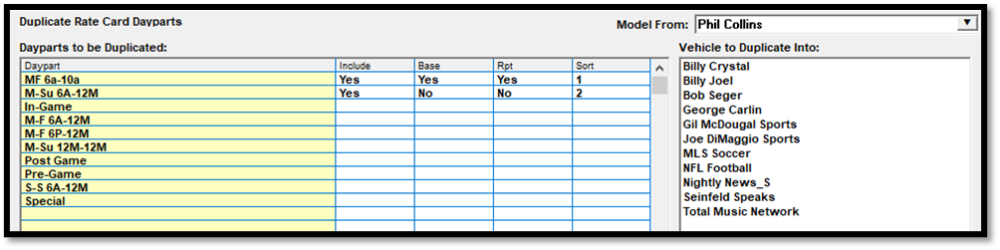

Duplicate
The Duplicate screen is used to duplicate daypart definitions from one vehicle into one or more other vehicles. As an example of how it would be used, if new vehicles were added to the system, and the dayparts that the new vehicles will use are identical to what an existing vehicle on the rate card is already using, the Duplicate screen can be used to quickly copy the daypart definitions from the old vehicle to the new vehicles, rather than having to individually enter each daypart definition for each vehicle. (This feature is only available on version 7.1 and above.)
To access the Duplicate screen, on the Rate Card screen, first select a rate card that you wish to add daypart rows to, then press the Duplicate button at the bottom of the Rate Card screen. This will bring up the “Duplicate Rate Card Dayparts” screen (shown below).

Duplicate Rate Card Daypart Screen
The Duplicate Rate Card Dayparts screen has the following sections:
Model From: lists the vehicles on the selected rate card. Select a vehicle from this dropdown to populate the “dayparts to be duplicated” list on the left side of the screen.
Dayparts to be Duplicated: lists dayparts that can be duplicated. The following fields are shown in this section:
- Daypart: each daypart is listed here, with the dayparts used by the “model from” vehicle shown at the top of the list, followed by an alphabetical list of the remaining dayparts from the selected rate card.
- Include: this field is used to set the daypart to be duplicated to the selected vehicle by toggling it to Yes. The dayparts used by the “model from” vehicle are automatically set to “Include = Yes”, but it’s possible to toggle those to “No” by clicking the Include toggle, or set other dayparts that are not on the “Model From” vehicle to get copied by clicking the Include toggle and setting it to Yes.
- Base, Report (Rpt), Sort: the base, report, and sort code settings from the daypart are shown here. These values can be edited by clicking in them (for the Base and Report setting), or by typing in them (for the sort number). The new dayparts that get added will use these settings.
Vehicle to Duplicate Into: Select one or more vehicles that you wish to copy the dayparts to by clicking on the vehicles in this list. When pressing the Duplicate or Done button, any selected vehicles in this list will get dayparts created on the rate card for it, for any daypart set to “Include = Yes” in the “Dayparts to be Duplicated” section.
Duplication Procedure
A typical way to use the Duplicate screen is when one or more new vehicles have been added to the system, and they need to be added to the current rate card, and the dayparts that will be used by those vehicles are identical to the dayparts already used by an existing vehicle. In a situation like that, the following procedure could be used to add the new vehicles to the rate card:
- From the Rate Card screen, select the rate card the new vehicles need to be added to, then press the Duplicate button (the new vehicles do not need to have been added to the rate card to do this procedure).
- Select the “Model From” vehicle, which is the vehicle that you will be copying dayparts from.
- From the “Dayparts to be Duplicated” list, set the Include toggle to Yes for any dayparts that you wish to copy.
- From the “Vehicle to Duplicate Into” vehicle list, select the new vehicle or vehicles that you wish to copy the dayparts to by clicking the vehicles. Ctrl-click to select more than one vehicle, or click and shift-click to select several at a time.
- Press the Duplicate button.
- Press Done or Cancel to return to the Rate Card screen.
- Rows will have been added for the vehicles that were selected on the “Vehicle to Duplicate Into” list, using the “Include = Yes” dayparts.
- Press Save on the Rate Card screen to save the changes.